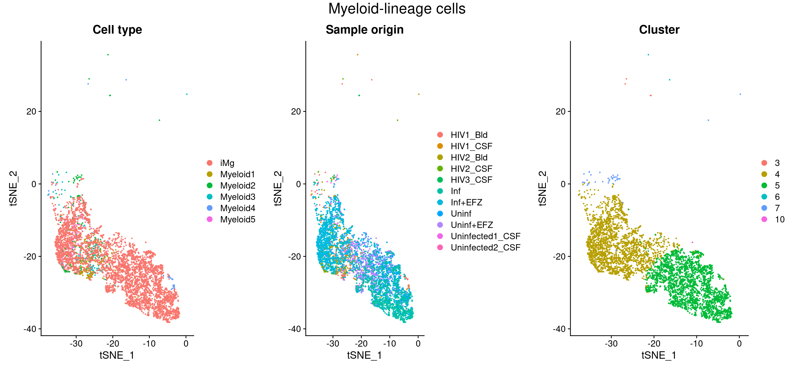
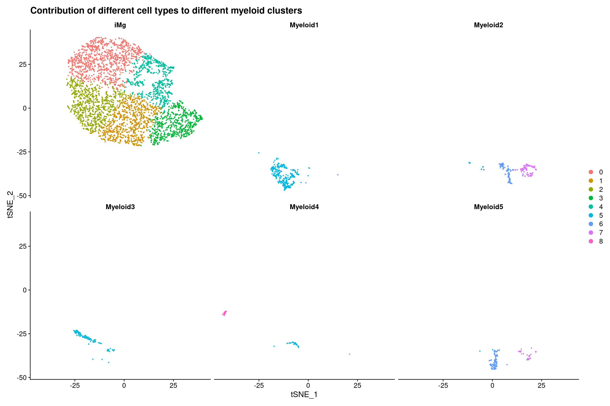

Triculture dataset
kmikulik
9 11 2021
Last updated: 2021-12-20
Checks: 6 1
Knit directory: report/
This reproducible R Markdown analysis was created with workflowr (version 1.6.2). The Checks tab describes the reproducibility checks that were applied when the results were created. The Past versions tab lists the development history.
Great! Since the R Markdown file has been committed to the Git repository, you know the exact version of the code that produced these results.
Great job! The global environment was empty. Objects defined in the global environment can affect the analysis in your R Markdown file in unknown ways. For reproduciblity it’s best to always run the code in an empty environment.
The command set.seed(20211203) was run prior to running the code in the R Markdown file. Setting a seed ensures that any results that rely on randomness, e.g. subsampling or permutations, are reproducible.
Great job! Recording the operating system, R version, and package versions is critical for reproducibility.
- session-info-chunk-inserted-by-workflowr
- unnamed-chunk-1
- unnamed-chunk-10
- unnamed-chunk-11
- unnamed-chunk-12
- unnamed-chunk-13
- unnamed-chunk-14
- unnamed-chunk-15
- unnamed-chunk-16
- unnamed-chunk-17
- unnamed-chunk-18
- unnamed-chunk-19
- unnamed-chunk-2
- unnamed-chunk-20
- unnamed-chunk-21
- unnamed-chunk-22
- unnamed-chunk-23
- unnamed-chunk-24
- unnamed-chunk-25
- unnamed-chunk-26
- unnamed-chunk-27
- unnamed-chunk-28
- unnamed-chunk-29
- unnamed-chunk-3
- unnamed-chunk-30
- unnamed-chunk-31
- unnamed-chunk-32
- unnamed-chunk-33
- unnamed-chunk-34
- unnamed-chunk-35
- unnamed-chunk-36
- unnamed-chunk-37
- unnamed-chunk-38
- unnamed-chunk-39
- unnamed-chunk-4
- unnamed-chunk-40
- unnamed-chunk-41
- unnamed-chunk-42
- unnamed-chunk-43
- unnamed-chunk-44
- unnamed-chunk-45
- unnamed-chunk-46
- unnamed-chunk-47
- unnamed-chunk-48
- unnamed-chunk-49
- unnamed-chunk-5
- unnamed-chunk-50
- unnamed-chunk-51
- unnamed-chunk-52
- unnamed-chunk-6
- unnamed-chunk-7
- unnamed-chunk-8
- unnamed-chunk-9
To ensure reproducibility of the results, delete the cache directory Triculture_dataset_analysis_and_integration_Farhadian_dataset_cache and re-run the analysis. To have workflowr automatically delete the cache directory prior to building the file, set delete_cache = TRUE when running wflow_build() or wflow_publish().
Great job! Using relative paths to the files within your workflowr project makes it easier to run your code on other machines.
Great! You are using Git for version control. Tracking code development and connecting the code version to the results is critical for reproducibility.
The results in this page were generated with repository version db265f0. See the Past versions tab to see a history of the changes made to the R Markdown and HTML files.
Note that you need to be careful to ensure that all relevant files for the analysis have been committed to Git prior to generating the results (you can use wflow_publish or wflow_git_commit). workflowr only checks the R Markdown file, but you know if there are other scripts or data files that it depends on. Below is the status of the Git repository when the results were generated:
Ignored files:
Ignored: analysis/HIV_CSF_dataset_analysis_cache/
Ignored: analysis/Independent_cell_type_identification_Farhadian_dataset_cache/
Ignored: analysis/TF_activity_analysis_of_myeloid2_cluster_cache/
Ignored: analysis/Triculture_dataset_GRN_with_Scenic_cache/
Ignored: analysis/Triculture_dataset_analysis_and_integration_Farhadian_dataset_cache/
Unstaged changes:
Modified: analysis/HIV_CSF_dataset_analysis.Rmd
Modified: analysis/Independent_cell_type_identification_Farhadian_dataset.Rmd
Modified: analysis/Introduction.Rmd
Modified: analysis/_site.yml
Modified: analysis/html_test.Rmd
Modified: analysis/references.bib
Note that any generated files, e.g. HTML, png, CSS, etc., are not included in this status report because it is ok for generated content to have uncommitted changes.
These are the previous versions of the repository in which changes were made to the R Markdown (analysis/Triculture_dataset_analysis_and_integration_Farhadian_dataset.Rmd) and HTML (docs/Triculture_dataset_analysis_and_integration_Farhadian_dataset.html) files. If you’ve configured a remote Git repository (see ?wflow_git_remote), click on the hyperlinks in the table below to view the files as they were in that past version.
| File | Version | Author | Date | Message |
|---|---|---|---|---|
| Rmd | db265f0 | Katharina782 | 2021-12-20 | wflow_publish(“analysis/Triculture_dataset_analysis_and_integration_Farhadian_dataset.Rmd”) |
| html | a5b39dc | Katharina782 | 2021-12-18 | Build site. |
| html | 8979e1a | Katharina782 | 2021-12-17 | Build site. |
| Rmd | cfbba70 | Katharina782 | 2021-12-17 | wflow_publish(files = rmd) |
| Rmd | e87fa96 | Katharina782 | 2021-12-16 | new files |
| Rmd | dde1097 | Katharina782 | 2021-12-10 | recent updates |
knitr::opts_chunk$set(echo = TRUE, collapse = TRUE, message = FALSE,
cache = TRUE, cache.lazy = FALSE, autodep = TRUE)
set.seed(42) # TODO: check with default seedlibrary(tidyverse)
library(Seurat)
library(edgeR)
library(Matrix)
library(data.table)
library(ggrepel)
#library(harmony)
library(RColorBrewer)
library(pheatmap)
library(ggcorrplot)
library(ComplexHeatmap)
library(circlize)
library(ggpubr)
library(gridExtra)
library(corrplot)
library(rstatix)
library(knitr)
library(metap)
library(multtest)
library(readxl)Triculture Dataset
The triculture dataset comes from the following paper (Ryan SK 2020). rThey used a Triculture system with induced neurons, induced astrocytes and induced microglia. For the induced microglia they used CX3CR1, IBA1, TMEM119, P2RY12 as markers. Induced microglia also express CCR5 which is a co-receptor necessary for HIV infection. These cells lacked expression of myeloid-progenitor markers.
iMg were infected with HIV for 15 days (resulting in 94% of cells infected, positive for HIV capsid protein P24 and exhibiting multinucleation). EFZ was used for ART. EFZ blocks HIV reverse transcription. This way it was possible to study non-productively infected cells. EFZ reduced infection by 2/3.
There was decreased expression of pro-imflammatory genes IL1b, Il8 and TNFalpha in inf+EFZ vs inf. This suggests a reduced inflmmatory reaction.
Inf + EFZ had an attenuated inflammatory response compared to Inf.
There was a change in signaling pathways caused by EFZ treatment in Uninf + EFZ vs Uninf. The EFZ treatment alone was very different from the EFZ treatment with infection.
????
Inf vs Inf + EFZ:
- inflammatory pathways were significantly activated in Inf iMg compared with Uinf iMg: IL-8, NFkB, EIF2
- EIF2 is involved in the UPR and ISR (increased in iMg, iAst, iN)
- only in iMg ATF4 mRNA expression was increased (TF downstream of ISR activation)
- it has previously been shown that ISR is activated in neurons and astrocytes from human brain samples with HAND
Uninf vs Inf + EFZ:
We would expect to see a dampened immune response compared with Inf
- Inf + EFZ had a much milder inflammatory reaction
- RhoGDI, CD40 signaling where the only upregulated pathways compared with Uninf iMg
- RhoGDI negaitvely regulates Rac -> functions in inflammatory pathways
- CD40 activates NFkB signaling
- milder inflammatory response is in line with lower disease severity in HAND + ART
Debaisieux et a., 2015 and Mazzolini et a., 2010 -> HIV-infected macrophages and uninfected macrophages exposed to HIV display decreased phagocytic capabilities
Files and data structure
Read in Files:
ia/2 = infected with HIV + treated with ART
ca = uninfected + ART
ctl = uninfected
inf = infected
the “.mtx” files contains a sparse matrix of class dgTMatrix
the “barcodes.tsv” files contain the cell barcodes
the “features.tsv” files contain the feature names as well as ensemble gene ids and “gene expression” strings in a third column
There are duplicated features in the data. How do you deal with this problem? (probably, because there are multiple ensemble gene IDs mapping to the same gene symbol -> the same gene symbol has multiple expression values)
- You could make them unique with the function
make.unique() - You could remove the duplicated features -> this is what I did
path <- "/media/ag-cherrmann/kmikulik/HIV_microglia/data/GSE143686_RAW/" #"/media/ag-cherrmann/kmikulik/HIV_microglia/data/GSE143686_RAW/"
all_files <- list.files(path)
all_cond_list <- map(seq.int(3,7), function(n){
file <- all_files[grepl(paste0("GSM427258", n), all_files)]
name <- str_extract(file[[1]],"ca|ctl|ia2|ia|inf")
barcodes <- read.table(paste0(path,file[[1]]), sep = "\t")
features <- read.table(paste0(path, file[[2]]), sep = "\t")
matrix <- readMM(paste0(path, file[[3]]))
colnames(matrix) <- barcodes$V1
rownames(matrix) <- features$V2
matrix <- matrix[!duplicated(rownames(matrix)),]
seurat_ob <- CreateSeuratObject(matrix, project = name,
assay = "RNA", min.cells = 1, min.features = 1)
seurat_ob[["percent_mt"]] <- PercentageFeatureSet(seurat_ob, pattern = "^MT-")
list(name = name, count = matrix, seurat_ob = seurat_ob)
})
#saveRDS(all_cond_list, "/media/ag-cherrmann/kmikulik/HIV_microglia/src/Triculture_dataset_Ryan_paper/seurat_list")Data processing
Before Quality Control:
all_cond_list <- readRDS("/media/ag-cherrmann/kmikulik/HIV_microglia/src/Triculture_dataset_Ryan_paper/seurat_list")
before_qc <- merge(all_cond_list[[1]]$seurat_ob,
c(all_cond_list[[2]]$seurat_ob,
all_cond_list[[3]]$seurat_ob,
all_cond_list[[4]]$seurat_ob,
all_cond_list[[5]]$seurat_ob),
project = "triculture_all_conditions",
add.cell.ids = c(paste0(all_cond_list[[1]]$name),
paste0(all_cond_list[[2]]$name),
paste0(all_cond_list[[3]]$name),
paste0(all_cond_list[[4]]$name),
paste0(all_cond_list[[5]]$name)))qual_metric <- c("nFeature_RNA", "nCount_RNA", "percent_mt")
plots <- map(qual_metric, function(metric){
ggplot() +
geom_violin(aes(x = before_qc@meta.data %>% pull("orig.ident"),
y = before_qc@meta.data %>% pull(metric),
fill = before_qc@meta.data %>% pull("orig.ident")),
alpha = .5) +
geom_boxplot(aes(x = before_qc@meta.data %>% pull("orig.ident"),
y = before_qc@meta.data %>% pull(metric)),
alpha = 0) +
xlab("sample origin") +
ylab(paste0(metric)) +
NoLegend()
})
do.call(grid.arrange, c(plots, ncol = 3, nrow = 1))
After quality control
For each sample separately
- remove genes expressing less than 200 genes or more than 5000
- remove cells expressing > 20% mitochondrial genes
- erge Seurat objects after Quality Control
# add percentage of mitochondiral genes to metadata
all_cond <- map(seq.int(1,5), function(n){
seurat_ob <- all_cond_list[[n]]$seurat_ob
#seurat_ob[["percent_mt"]] <- PercentageFeatureSet(seurat_ob, pattern = "^MT-")
#plot <- VlnPlot(seurat_ob,
# features = c("nFeature_RNA", "percent_mt", "nCount_RNA"),
# ncol = 3) +
#labs(title = paste0("condition ", all_cond_list[[n]]$name))
seurat_ob <- subset(seurat_ob, nFeature_RNA > 200 & nFeature_RNA < 5000 & percent_mt < 20)
list(name = all_cond_list[[n]]$name, seurat_ob = seurat_ob)#, plot = plot)
})triculture <- merge(all_cond[[1]]$seurat_ob,
c(all_cond[[2]]$seurat_ob,
all_cond[[3]]$seurat_ob,
all_cond[[4]]$seurat_ob,
all_cond[[5]]$seurat_ob),
project = "triculture_all_conditions",
add.cell.ids = c(paste0(all_cond[[1]]$name),
paste0(all_cond[[2]]$name),
paste0(all_cond[[3]]$name),
paste0(all_cond[[4]]$name),
paste0(all_cond[[5]]$name)))qual_metric <- c("nFeature_RNA", "nCount_RNA", "percent_mt")
plots <- map(qual_metric, function(metric){
ggplot() +
geom_violin(aes(x = triculture@meta.data %>% pull("orig.ident"),
y = triculture@meta.data %>% pull(metric),
fill = triculture@meta.data %>% pull("orig.ident")),
alpha = .5) +
geom_boxplot(aes(x = triculture@meta.data %>% pull("orig.ident"),
y = triculture@meta.data %>% pull(metric)),
alpha = 0) +
xlab("sample origin") +
ylab(paste0(metric)) +
NoLegend()
})
do.call(grid.arrange, c(plots, ncol = 3, nrow = 1))
Normalization, Scaling, Find Variable Features
- log normalization
- scale data so that we have mean = 0 and variance = 1
- Find the 2000 most highly variable features
triculture <- NormalizeData(triculture, verbose = FALSE)
triculture <- ScaleData(triculture, verbose = FALSE)
triculture <- FindVariableFeatures(triculture, verbose = FALSE)Dimensionality reduction
- compute PCA
- use elbow plot to determine dimensions that contribute to variability
- find the k-nearest neighbors
- find Clusters based on KNN-graph
- calculate TSNE embedding
triculture <- RunPCA(triculture, features = VariableFeatures(triculture), verbose = FALSE)
ElbowPlot(triculture)
triculture <- FindNeighbors(triculture, verbose = FALSE)
triculture <- FindClusters(triculture, verbose = FALSE)
triculture <- RunTSNE(triculture, dims = 1:10, verbose = FALSE)triculture <- readRDS("seurat_objects/triculture_seurat_object")
#triculture <- readRDS("/media/ag-cherrmann/kmikulik/HIV_microglia/src/Triculture_dataset_Ryan_paper/triculture_seurat_object")
DimPlot(triculture, reduction = "tsne", pt.size = .01, label = TRUE,
group.by = "seurat_clusters")
Cell type annotation
For annotating the different clusters the same markers as in (Ryan SK 2020) were used:
- Microglia: AIF1, SPI1, CD4
- Astrocytes: SOX9, THBS1
- Neurons: SYN1, MAP2
#markers <- FindAllMarkers(triculture)
#triculture <- readRDS("/media/ag-cherrmann/kmikulik/HIV_microglia/src/Triculture_dataset_Ryan_paper/triculture_seurat_object")
markers <- read.table("data_files/marker_genes_triculture_dataset")
#markers <- read.table("/media/ag-cherrmann/kmikulik/HIV_microglia/data/marker_genes_triculture_dataset")
top_2 <- markers %>% group_by("seurat_cluster") %>% top_n(n = 2, wt = avg_log2FC)
marker_genes <- c("AIF1", "SPI1", "CD4", "MAP2", "SYN1", "THBS1", "SOX9")
p1 <- FeaturePlot(triculture, features = "AIF1")
p2 <- FeaturePlot(triculture, features = "SPI1")
p3 <- FeaturePlot(triculture, features = "CD4")
p4 <- FeaturePlot(triculture, features = "MAP2")
p5 <- FeaturePlot(triculture, features = "SYN1")
p6 <- FeaturePlot(triculture, features = "THBS1")
p7 <- FeaturePlot(triculture, features = "SOX9")
ggarrange(p1,p2,p3,p4,p5,p6,p7, ncol = 2, nrow =4 )
Details on cell type annotation
Gene expression
Different clusters were annotated according to the gene expression of marker genes mentioned above.
VlnPlot(triculture, features = c("CD4", "SPI1", "AIF1"), group.by = "seurat_clusters")#, group.by = seurat_cluster)
VlnPlot(triculture, features = c("MAP2", "SYN1"), group.by = "seurat_clusters")VlnPlot(triculture, features = c("THBS1", "SOX9"), group.by = "seurat_clusters")
# 4, 9, 11, 18 = Microglia
# 0, 1, 2, 3,8, 10, 13, 15, 18, 19 = Neurons
# 6, 7, 12, 14, 16 = Astrocytes
# 5, 17 are undesginated
cell_types <- (triculture@meta.data %>%
mutate(cell_type = ifelse(seurat_clusters %in% c(4,9,11), "iMg",
ifelse(seurat_clusters %in% c(6,7,12,14,16), "iAst",
ifelse(seurat_clusters %in%
c(0,1,2,3,8,10,13,15,18,19),
"iNeurons", "Undesignated")))))[["cell_type"]]
triculture <- AddMetaData(triculture, cell_types, col.name = "cell_type")Remove undesignated cells
There is one group of cells where it is not clear which cell state they represent (Undesignated), we will exclude them from further analysis as (Ryan SK 2020) did.
p1 <- DimPlot(triculture, reduction = "tsne", pt.size = .01, label = TRUE,
group.by = "cell_type")triculture_clean <- subset(triculture, cell_type %in% c("iMg", "iNeurons", "iAst")) p2 <- DimPlot(triculture_clean, reduction = "tsne", pt.size = .01, label = TRUE,
group.by = "cell_type")p1+p2
Heatmap of top 20 marker genes for each cell type
Top20 marker genes for each cell cell type:
Idents(triculture_clean) <- "cell_type"
top_n <- markers %>% group_by (cluster) %>% top_n(n = 20, wt = avg_log2FC)
DoHeatmap(triculture_clean, features = top_n$gene)Number of cells per condition and cell type
How many cells of each cell type and condition are present in the dataset?
triculture_clean@meta.data %>% group_by(cell_type, orig.ident) %>%
summarize(n = n()) %>%
pivot_wider(names_from = orig.ident, values_from = n) %>%
kable() # to make table look nice in Rmarkdown| cell_type | ca | ctl | ia | ia2 | inf |
|---|---|---|---|---|---|
| iAst | 1481 | 686 | 878 | 944 | 1269 |
| iMg | 1163 | 722 | 632 | 750 | 1166 |
| iNeurons | 6733 | 4899 | 747 | 2250 | 3964 |
Different infection and treatment conditions
Interestingly, the infected cells treated with EFZ (Inf+EFZ) clearly separate from the infected, but untreated cells (Inf) and the the uninfected cells (Uninf, Uninf+EFZ) in the microglia cluster as can be seen in the figure below.
# rename origin of ident for easier interpretation
origin_vector <- (triculture_clean@meta.data %>% mutate(orig.ident = ifelse(orig.ident %in%
c("ia", "ia2"), "Inf+EFZ",
ifelse(orig.ident == "ca",
"Uninf", ifelse(
orig.ident == "ctl", "Uninf+EFZ",
"Inf")))))[["orig.ident"]]
triculture_clean <- AddMetaData(triculture_clean, origin_vector, col.name = "orig.ident")DimPlot(triculture_clean, reduction = "tsne", group.by = "orig.ident", pt.size = .01, )
Inflammatory gene expression in iMg
The largest change in gene expression related to inflammation was found in iMg among the 3 cell types (Ryan SK 2020). Shown are only inflammatory genes.
inflamm_genes <- c("TNF", "ACSL1", "MGST3", "B2M", "IFNGR2", "GRINA", "TLR2",
"SOD2", "GLUL", "CFLAR", "CTNNB1", "CXCL8", "CCL4", "IL1B",
"ATF4", "CXCL8", "CCL4", "CCL2", "IL1B", "ATF4", "CXCL1",
"NFKB1", "TANK", "APOE", "TREM2", "LY96", "SRC", "NCF1",
"HCK", "LYN", "VASP", "C3", "C5", "RAP1B", "RAP2B", "MAF",
"JUND", "SQSTM1", "FTH1", "RHOQ", "CD36", "FOS", "NFKBIA",
"ICAM1", "TNFAIP3", "LYZ", "PPP1R12A", "RND3", "CYBA", "IRF8",
"SLC25A6")
DoHeatmap(triculture_clean, features = inflamm_genes)
Differences of inflammatory gene expression between conditions
The gene expression of inflammatory genes in microglia was not very different between the conditions. The Inf+EFZ cells show a slightly different pattern of gene expression.
DoHeatmap(subset(triculture_clean, cell_type == "iMg"),
features = inflamm_genes, group.by = "orig.ident")
Integration of triculture dataset with dataset of blood & CSF samples from HIV-infected patients
The HIV Blood & CSF dataset (Shelli F. Farhadian and Spudich 2018) used before was integrated with the triculture dataset (Ryan SK 2020).
Integration of two datasets is based on Seurat (Stuart T 2019). It first identifies anchors between datasets, calculates scores for all anchors and then calculates an integrated expression matrix which can be used for downstream analysis.
- Identify features which are variable across datasets
- Identify anchors between the two datasets and create an integrated data assay
- Run a single integrated analysis on all cells
Details on integration
For more details see: (Stuart T 2019)
- Identify features which are variable across datasets
- Identify anchors between the two datasets and create an integrated data assay
- Run a single integrated analysis on all cells
hiv7 <- readRDS("/media/ag-cherrmann/kmikulik/HIV_microglia/src/Reproduce_Farhadian_Paper/Seurat_objects/total_7_samples_label_transfer.rds")
hiv7 <- NormalizeData(hiv7, verbose = FALSE)
hiv7 <- FindVariableFeatures(hiv7, verbose = FALSE)
# add both datasets to a lits
data_list <- list(hiv = hiv7, triculture = triculture_clean)
# select features that are repeatedly variable across datasets for integration
features <- SelectIntegrationFeatures(object.list = data_list, verbose = FALSE)
# identify integration anchors and perform integration
anchors <- FindIntegrationAnchors(object.list = data_list,
anchor.features = features, verbose = FALSE)
combined <- IntegrateData(anchorset = anchors, verbose = FALSE)
# run analysis on integrated dataset
combined <- ScaleData(combined, verbose = FALSE)
combined <- RunPCA(combined, verbose = FALSE)
#ElbowPlot(combined)
combined <- RunTSNE(combined, reduction = "pca", dims = 1:10, verbose = FALSE)
combined <- FindNeighbors(combined, reduction = "pca", dims = 1:10, verbose = FALSE)
combined <- FindClusters(combined, resolution = .3, verbose = FALSE)
# add annotations from which dataset the sample came from
dataset_vector <- (combined@meta.data %>% mutate(dataset = ifelse(orig.ident %in%
c("HIV1_CSF", "HIV2_CSF",
"HIV3_CSF", "HIV1_Bld",
"HIV2_Bld", "Uninfected1_CSF",
"Uninfected2_CSF"),
"csf", "triculture")))[["dataset"]]
combined <- AddMetaData(combined, dataset_vector, col.name = "dataset")
# add information on the cell groups in the combined datasets
combined_clusters <- (combined@meta.data %>%
mutate(combined_clusters = ifelse(seurat_clusters %in% c(2,10), "Microglia",
ifelse(seurat_clusters %in% c(3,9), "iAst",
ifelse(seurat_clusters %in% c(0,1,7,11),
"iNeurons",
ifelse(seurat_clusters %in% c(8,5,6), "Immune Cells", "Undesignated"))))))[["combined_clusters"]]
combined <- AddMetaData(combined, combined_clusters, col.name = "combined_clusters")
#saveRDS(combined,"/media/ag-cherrmann/kmikulik/HIV_microglia/src/Triculture_dataset_Ryan_paper/triculture_hiv_combined_seurat_object")
Integrated clusters
When integrating the CSF dataset and the Triculture dataset the iMg cells clustered together with the Myeloid cells from the CSF and Blood samples from the HIV-1 infected/uninfected patients. This was expected since they are both myeloid-lineage cells. However, this makes it more difficult to draw conclusions on which of the five Myeloid clusters is the most microglia-like. Therefore, we had a closer look at this myeloid-lineage cluster consisting of iMg from triculture and Myeloid cells from CSF and Blood samples.
Visualization of the integrated dataset
combined = readRDS("seurat_objects/triculture_hiv_combined_seurat_object_2")
p1 <- DimPlot(combined, reduction = "tsne", group.by = "dataset",
label = TRUE) + NoLegend()
p2 <- DimPlot(combined, reduction = "tsne", group.by = "cell_type",
label = TRUE, repel = TRUE) + NoLegend()
p3 <- DimPlot(combined, reduction = "tsne", group.by = "cell_type",
split.by = "dataset", label = TRUE, repel = TRUE) + NoLegend()
p4 <- DimPlot(combined, reduction = "tsne", group.by = "seurat_clusters",
label = TRUE) + NoLegend()
ggarrange(p1, p2, p3,p4, ncol = 2, nrow = 2)
| Version | Author | Date |
|---|---|---|
| a5b39dc | Katharina782 | 2021-12-18 |
a1 <- DimPlot(combined, reduction = "tsne", split.by = "dataset",
group.by = "seurat_clusters", label = TRUE, repel =TRUE)
a2 <- DimPlot(combined, reduction = "tsne", split.by = "dataset",
group.by = "orig.ident")#, label = TRUE, repel =TRUE)
ggarrange(a1, a2, ncol = 2, nrow = 1)
| Version | Author | Date |
|---|---|---|
| a5b39dc | Katharina782 | 2021-12-18 |
Myeloid lineage cluster
Visualization of Myeloid lineage cluster (iMg, Myeloid1/2/3/4/5)
The plot below visualizes that iMg and CSF/Blood Myeloid cells cluster together, independent of their infection status.
subset_monocytes <- subset(combined, cell_type %in% c("Myeloid1",
"Myeloid2",
"Myeloid3",
"Myeloid4",
"Myeloid5",
"iMg"))
p1 <- DimPlot(subset_monocytes, group.by = "cell_type")
p2 <- DimPlot(subset_monocytes, group.by = "orig.ident")
p3 <- DimPlot(subset_monocytes, group.by = "seurat_clusters")
fig <- ggarrange(p1, p2, p3, ncol = 3, nrow = 1)
annotate_figure(fig, top = text_grob("Myeloid-lineage cells"))
| Version | Author | Date |
|---|---|---|
| a5b39dc | Katharina782 | 2021-12-18 |
The plot below shows only CSF/Blood Myeloid cells and the Inf+EFZ iMg:
- The CSF/Blood Myeloid cells cluster together with Inf+EFZ iMG as expected and mainly contribute to the same subcluster.
- Blood Myeloid 4 is an exception and belongs to a different subcluster.
subset_infected <- subset(combined, orig.ident %in% c("HIV1_CSF", "HIV2_CSF", "HIV3_CSF",
"HIV1_Bld", "HIV2_Bld","Inf+EFZ") &
cell_type %in% c("Myeloid1",
"Myeloid2",
"Myeloid3",
"Myeloid4",
"Myeloid5",
"iMg"))
p1 <- DimPlot(subset_infected, group.by = "orig.ident")
p2 <- DimPlot(subset_infected, group.by = "orig.ident")
p3 <- DimPlot(subset_infected, group.by = "seurat_clusters")
fig <- ggarrange(p1, p2, p3, ncol = 3, nrow = 1)
annotate_figure(fig, top = text_grob("Infected CSF/Blood Myeloid cells & Inf+EFZ iMg"))
| Version | Author | Date |
|---|---|---|
| a5b39dc | Katharina782 | 2021-12-18 |
cell types and conditions partially separate according to the two iMg clusters
The myeloid-lineage cluster separated into two distinct subclusters. Interestingly, the infected + EFZ iMg separeted clearly from the infected iMg. The separation was not so clear for the uninfected cells, which contributed to both subclusters. Another observations is that the infected Myeloid1/2/3/5 cells belong
to the same subcluster as the infected + EFZ iMg. Conversely, the Myeloid4 cells cluster with the infected iMg. Since the infected CSF/Blood Myeloid cells originate from HIV infected and treated patients we would expect them to cluster togehter with the infected + EFZ iMg. However, there might also be infected CSF/Blood Myeloid cells which are not affected by the treatment. The Myeloid4 cells which are from Blood samples might consitute an infected cell population unaffected by the ART treatment.
DimPlot(subset_monocytes, group.by = "seurat_clusters",
split.by = "orig.ident", ncol = 4)
| Version | Author | Date |
|---|---|---|
| a5b39dc | Katharina782 | 2021-12-18 |
DimPlot(subset_monocytes, group.by = "seurat_clusters",
split.by = "cell_type", ncol = 4)
Subcluster the Myeloid-Lineage Cluster of the integrated dataset
Isolating the iMg and all Myeloid cell clusters from the integrated dataset and normalizing, scaling and re-clustering these isolated cells might give us additional insights.
Details on de-novo clusterin
microglia <- subset(combined, cell_type %in% c("iMg",
"Myeloid1",
"Myeloid2",
"Myeloid3",
"Myeloid4",
"Myeloid5"))
microglia_recluster <- SCTransform(microglia, verbose = FALSE)
microglia_recluster <- ScaleData(microglia_recluster, verbose = FALSE)
microglia_recluster <- RunPCA(microglia_recluster, verbose = FALSE)
ElbowPlot(microglia_recluster)
microglia_recluster <- RunTSNE(microglia_recluster, reduction = "pca", dims = 1:10)
microglia_recluster <- FindNeighbors(microglia_recluster)
microglia_recluster <- FindClusters(microglia_recluster, resolution = 0.5)It is no surprise that cells from the triculture dataset separate from the CSF/Blood-derived cells. When we recluster the myeloid lineage derived cells, we obtain five subclusters for the iMg and three subclusters for the five
CSF/Blood Myeloid clusters as can be seen in the plots below.
We can also observe that the Myeloid2 and Myeloid5 separate from Myeloid1/2/3 which is expected, since Myeloid2/5 originate from CSF samples and Myeloid1/3/4 originate from blood samples.
microglia_recluster <- readRDS("/media/ag-cherrmann/kmikulik/HIV_microglia/src/Triculture_dataset_Ryan_paper/microglia_myeloid_seurat_object_reclustering")
a1 <- DimPlot(microglia_recluster, reduction = "tsne",
group.by = "seurat_clusters", pt.size = .4) +
labs(title = "Clustering")
a2 <- DimPlot(microglia_recluster, reduction ="tsne",
group.by = "cell_type", pt.size = .4) +
labs(title = "Cell type")
a3 <- DimPlot(microglia_recluster, reduction ="tsne",
group.by = "dataset", pt.size = .4) +
labs(title = "Dataset")
a4 <- DimPlot(microglia_recluster, reduction = "tsne",
group.by = "orig.ident", pt.size = .4) +
labs(title = "Sample origin")
ggarrange(a1, a2, a3, a4, ncol = 2, nrow = 2)
| Version | Author | Date |
|---|---|---|
| a5b39dc | Katharina782 | 2021-12-18 |
Interestingly, both the Myeloid5 cells and the Myeloid2 cells are split between the cluster six (blue) and seven (purple). In the following we will have a closer look at this segregation.
When performing GRN inference with Scenic we also identified two potentially biologically relevant subclusters of the Myeloid2 cells. It could be that these independently found clusters correlate.
a5 <- DimPlot(microglia_recluster, reduction ="tsne",
split.by = "cell_type", pt.size = .4, ncol=3)
a5
| Version | Author | Date |
|---|---|---|
| a5b39dc | Katharina782 | 2021-12-18 |
It looks like the two clusters identified this way correspond to different sample origins. CSF cells from patient1 (HIV1_CSF) and patient2 (HIV2_CSF) belong to cluster six,while CSF cells from patient3 (HIV3_CSF) and the two uninfected patients (Uninfected1_CSF, Uninfected2_CSF) belong to cluster seven. The separation of patient3 (HIV3_CSF) from patient1 (HIV1_CSF) and patient2 (HIV2_CSF) might correspond to a batch effect, or it might be a biological effect, because the infection affected the cells differently.
#a1 <- DimPlot(subset(microglia_recluster, cell_type == "iMg"), reduction = "tsne",
# group.by = "orig.ident", pt.size = .4)
a2 <- DimPlot(subset(microglia_recluster, cell_type != "iMg"), reduction = "tsne",
group.by = "orig.ident", pt.size = .4) +
labs(title = "Sample origin")
#a3 <- DimPlot(subset(microglia_recluster, cell_type == "iMg"), reduction = "tsne",
#group.by = "seurat_clusters", pt.size = .4)
a4 <- DimPlot(subset(microglia_recluster, cell_type != "iMg"), reduction = "tsne",
group.by = "seurat_clusters", pt.size = .4) +
labs(title = "Cluster")
fig <- ggarrange(a2, a4, ncol = 2, nrow = 1)
annotate_figure(fig, top = text_grob("CSF/Blood Myeloid cells"))
| Version | Author | Date |
|---|---|---|
| a5b39dc | Katharina782 | 2021-12-18 |
Since the segregation into two clusters seems to be related to the sample origin rather than to the infection status, we would not expect the clusters to overlap with the clusters identified after GRN inference with SCENIC. In the figure below this is visualized for only the Myeloid2 cells from infected CSF samples (HIV1_CSF, HIV2_CSF, HIV3_CSF).
# read in Myeloid2 cells
hivmy2 <- readRDS("data_files/hiv_myeloid2_subclusters")
my2 <- subset(microglia_recluster, cell_type == "Myeloid2" &
orig.ident %in% c("HIV1_CSF", "HIV2_CSF", "HIV3_CSF"))
my2 <- AddMetaData(my2, hivmy2@meta.data["ht_cluster"],
col.name = "TF_activity_clusters")
p1 <- DimPlot(my2, group.by = "seurat_clusters") +
labs(title="Clusters")
p2 <- DimPlot(my2, group.by = "TF_activity_clusters") +
labs("TF activity")
p3 <- DimPlot(my2, group.by = "orig.ident") +
labs(title = "Sample origin")
figure <- ggarrange(p1, p2, p3, ncol = 3, nrow = 1)
annotate_figure(figure,
top = text_grob("Comparison with two clusters with different TF acitivty",
color = "black", face = "bold", size = 20))
#my25 <- subset(microglia, seurat_clusters %in% c(6,7) &cell_type %in% c("Myeloid2", "Myeloid5"))For this reason the reclustering did not lead to any useful insights and will not be analyzed further.
Marker genes between different conditions
In the following I will compare gene expression between infected cells and uninfected cells, both treated with EFZ. I will use the uninfected cells as a baseline to find genes which are upregulated or downregulated in infected cells compared to uninfected cells. Since we have both cells treated with EFZ and cells not treated with EFZ, we can define a signature for both treatment conditions separately and then see if there is an overlap between the gene signatures of infected cells (+/- EFZ)
Features upregulated in Inf+EFZ vs Uninf+EFZ
- APOE
- expressed by miroglia and astrocytes
- major carrier protein mediating transport and delivery of cholesterol, lipids in the brain
- HIV1 Tat (viral protein) can bind to LRP1 (controls APOE uptake in the brain) (Khan N., J Neuroinflammation, 2018)
- LPAR6
- expressed in macrophages
- RAB32
- ER stress is a hallmark of neurodegenerative diseases
- Rab GTPases are essential for cytokine production in neuroinflammation (Liang Y., Neuroscience Letters, 2012)
- involved in formation of autophagosomes, upregulated in brain inflammation, (Prashar A., Front. Cell. Infect. Microbiol., 2017)
- TXNIP
- sequesters TRX (reduced thioredoxin), inhibiting its function -> increased oxidative stress
- cellular stress factors regulate TXNIP expression
- expressed by microglia, neurons and astrocytes
- TXNIP expression promotes inflammatory activation (Tsubaki H., Int J Mol Sci., 2020)
- aggravates brain injury by activating NLRP3 inflammasomes (Liu Y., Lab Invest, 2021)
- PDK4
- metabolic checkpoint of M1 polarization of macrophages (Min B.k., Frontiers in Immunology, 2019)
- NEAT1 (expression is changed by HIV1 infection)
- NEAT1 inhibits microglial polarization towards the pro-inflammatory M1 phenotype in ischemia (cell culture) (Ni X. Scientific Reports, 2020)
- in CD4 T Cells downregulation of NEAT1 leads to higher HIV replication
- critical for the substructural integrity of the nuclear paraspeckle, which is important for HIV replication
- potential biomarker of HIV infection (Shen Li, IJID, 2019)
- HIV seems to exploit the fact that activated CD4 T cells have decreased NEAT1 expression
- higher replication if NEAT1 is repressed (Liu H., Virology, 2018) This might make sense since we also want to reduce viral replication with EFZ, so in these cells NEAT1 might be upregulated reducing HIV1 replication
- DAB2
- DAB2 is a marker of microglia activation (Bell-Temin H., Mol Cell Proteomics, 2015)
- expressed in early microglia more than at later stages (Matcovitch-Natan O., Science, 2016)
- APOC1 After HVI1 enters the brain int can exist in CSF, perivascular macrophages, microglia and astrocytes. With ART you can supress HIV1 replication in plasma and CSF, but some HIV1 resrevoirs and neuroinflammation persist. This results in the 50% prevalence of HAND. Tat enhances HIV infectivity. (Khan N., J Neuroinflammation, 2018)
# isolate iMg cells
microglia <- subset(combined, cell_type == "iMg")
# only iMg cells to identify potential signatures between infected vs uninfected
Idents(microglia) = "orig.ident"
# find marker genes between Uninf+EFZ and Inf+EFZ
inf_uninf_art_marker <- FindMarkers(microglia, ident.1 = "Inf+EFZ",
ident.2 = "Uninf+EFZ", verbose = FALSE)
up_inf_art <- inf_uninf_art_marker %>%
arrange(desc(avg_log2FC)) %>%
head(20) %>%
rownames_to_column("gene")
up_inf_art %>% kable()| gene | p_val | avg_log2FC | pct.1 | pct.2 | p_val_adj |
|---|---|---|---|---|---|
| RAB32 | 0 | 1.2840817 | 0.656 | 0.291 | 0.0e+00 |
| NUPR1 | 0 | 1.0569999 | 0.680 | 0.460 | 0.0e+00 |
| HMOX1 | 0 | 0.9031207 | 0.597 | 0.309 | 0.0e+00 |
| PDK4 | 0 | 0.8673561 | 0.204 | 0.019 | 0.0e+00 |
| SLC38A2 | 0 | 0.8452040 | 0.288 | 0.079 | 0.0e+00 |
| LPAR6 | 0 | 0.8045929 | 0.579 | 0.289 | 0.0e+00 |
| ID3 | 0 | 0.7434776 | 0.258 | 0.102 | 0.0e+00 |
| CYP1B1 | 0 | 0.7204238 | 0.911 | 0.776 | 0.0e+00 |
| ID2 | 0 | 0.7083962 | 0.501 | 0.259 | 0.0e+00 |
| NEAT1 | 0 | 0.6849097 | 0.784 | 0.579 | 0.0e+00 |
| ZFP36L2 | 0 | 0.6665581 | 0.323 | 0.140 | 0.0e+00 |
| PTPRE | 0 | 0.5783929 | 0.305 | 0.147 | 0.0e+00 |
| ATP1B1 | 0 | 0.5778028 | 0.554 | 0.418 | 1.9e-06 |
| FOS | 0 | 0.5719556 | 0.293 | 0.139 | 0.0e+00 |
| VMP1 | 0 | 0.5710388 | 0.664 | 0.429 | 0.0e+00 |
| DAB2 | 0 | 0.5509657 | 0.585 | 0.356 | 0.0e+00 |
| TXNIP | 0 | 0.5238871 | 0.466 | 0.283 | 0.0e+00 |
| EEF1D | 0 | 0.5233945 | 0.631 | 0.424 | 0.0e+00 |
| SAT1 | 0 | 0.5223996 | 0.982 | 0.940 | 0.0e+00 |
| SOCS6 | 0 | 0.4893932 | 0.197 | 0.080 | 0.0e+00 |
- CCL3, CCL4 = cehmoattractants produced by macrophages, primary ligands for the HIV-1 virus coreceptor CCR5 (https://pubmed.ncbi.nlm.nih.gov/16773571/)
- Il1B
- is produced by activated macrophages -> mediator of the inflammatory response #### Features downregulated in Inf+EFZ vs. Uninf+EFZ:
- involved in neurodegeneration (https://pubmed.ncbi.nlm.nih.gov/12794045/)
- HIV-1 infection induces interleukin-1beta production, so why is it more highly expressed in uninfected than in infected cells? (https://pubmed.ncbi.nlm.nih.gov/24939850/) One explanation might be trained immunity of these monocytes which is associated with HIV. Pro-inflammatory pathways are upregulated in monocytes of HIV patients on ART. Il-b expression was hihger in HIV patients compared with controls. (van der Heijden W. A. et al., JCL Insight, 2021 –> study on circulating immune cells)
- IL6 is also more highly expressed in monocytes from HIV patients (van der Heijden W. A. et al., JCL Insight, 2021 –> study on circulating immune cells)
- TNF, IL1b and IL6 are monocyte-derived pro-inflammatory cytokines, expressed by activated microglia. IL13, and IL10 would be expressed by alternatively activated macrophages (M2) -> anti-inflammatory. (van der Heijden W. A. et al., JCL Insight, 2021)
- TNFAIP2 is a primary response gene of TNFalpha (expression is regulated by NFkB) -> mediator of inflammation (Jia L., Journal of Moleuclar Medicine, 2018)
- CCL20:
- CCL20 is constitutively expressed in lymphoid tissue and upregulated in inflammation -> homeostatic and inflammatory role. CCR6/CCL20 axis may be involved in HIV pathogenesis and immunity. CCL20 was able to facilitate HIV-1 integration in T cells. It leads to propagation of the virus, because it recruits T cells and DC which then migrate and spread the virus. Anti-HIV activity of CCR6 by interfering with reverse transcription. -> *CCR6 seems to be a double-edged sword in HIV infection which contributes to immunity and spread of HIV. Since CCL20 is found at epithelial and mucosal sites the chemokine may contribute to the innate defense against HIV entry. (Lee A. Y. S., Journal of General Virology, 2017)
- chemokine interacting with CCR6 receptors, anti_HIV activity in combination with human beta defensins (Aziz N. et al., J AIDS Clin Res, 2016)
- NFkB is an inducible transcription factor and a mediator of inflammatory response in innate and adaptive immunity. It induces the expression of various pro-inflammatory genes including those encoding cytokines and chemokines. It participates in inflammasome regulation. NFKB1 = p50. Inappropriate activation of NFKB is associated with inflammatory diseases (Liu T. et al., Signal Transduction and Targeted therapy, 2017)
down_inf_art <- inf_uninf_art_marker %>%
arrange(avg_log2FC) %>%
head(20) %>%
rownames_to_column("gene")
down_inf_art %>% kable()| gene | p_val | avg_log2FC | pct.1 | pct.2 | p_val_adj |
|---|---|---|---|---|---|
| MT1X | 0 | -3.413896 | 0.147 | 0.735 | 0 |
| MT2A | 0 | -3.113559 | 0.167 | 0.695 | 0 |
| CCL4 | 0 | -3.102918 | 0.321 | 0.910 | 0 |
| CCL4L2 | 0 | -2.676517 | 0.235 | 0.816 | 0 |
| CCL3L1 | 0 | -2.579091 | 0.290 | 0.807 | 0 |
| CCL3 | 0 | -2.560332 | 0.611 | 0.982 | 0 |
| IL1B | 0 | -2.405276 | 0.090 | 0.530 | 0 |
| CXCL1 | 0 | -2.335406 | 0.244 | 0.734 | 0 |
| MT1G | 0 | -1.926247 | 0.025 | 0.177 | 0 |
| MT1E | 0 | -1.822557 | 0.016 | 0.234 | 0 |
| RND3 | 0 | -1.663546 | 0.045 | 0.386 | 0 |
| CXCL3 | 0 | -1.642259 | 0.119 | 0.416 | 0 |
| H1F0 | 0 | -1.520974 | 0.209 | 0.555 | 0 |
| CCL20 | 0 | -1.499514 | 0.017 | 0.197 | 0 |
| ICAM1 | 0 | -1.364986 | 0.169 | 0.496 | 0 |
| TNFAIP3 | 0 | -1.323281 | 0.158 | 0.465 | 0 |
| NFKBIZ | 0 | -1.314996 | 0.079 | 0.348 | 0 |
| CXCL2 | 0 | -1.311186 | 0.169 | 0.438 | 0 |
| IER3 | 0 | -1.305024 | 0.249 | 0.539 | 0 |
| CCL8 | 0 | -1.205254 | 0.379 | 0.557 | 0 |
Differential gene expression between Inf and Uninf (no treatment)
inf_uninf_marker <- FindMarkers(microglia, ident.1 = "Inf",
ident.2 = "Uninf", verbose = FALSE)
# upregulated in Inf vs Uninf, no treatment
up_inf_no <- inf_uninf_marker %>%
arrange(desc(avg_log2FC)) %>%
head(20) %>%
rownames_to_column("gene")
#up_inf_no %>% kable()
down_inf_no<- inf_uninf_marker %>%
arrange(avg_log2FC) %>%
head(20) %>%
rownames_to_column("gene")
#down_inf_no%>% kable()Only 3% of genes which are upregulated and only 14% of genes which are downregulated in infected vs. uninfected cells overlap between the treatment conditions. This means, that the genes defining the infection might differ between cells with and without treatment. This reflects the findings of (Ryan SK 2020) that the EFZ treatment lead to a distinct immune response of iMg and distinct activation of two inflammatory pathways, RhoGDI and CD40 pathways as will be describe later on.
up_inf <- intersect(up_inf_art$gene, up_inf_no$gene)
down_inf <- intersect(down_inf_art$gene, down_inf_no$gene)
print(c(up_inf, down_inf))
[1] "HMOX1" "MT1X" "MT2A" "CCL4L2" "RND3" "H1F0" p1 <- ggVennDiagram::ggVennDiagram(list(up_inf_art$gene, up_inf_no$gene),
label_alpha = 0,
category.names= c("Inf+EFZ", "Inf"),
#set.size = 20,
label = "percent",
label_size = 6) +
scale_fill_distiller(palette = "RdBu") +
labs(title = "Genes upregulated in infected cells")
p2 <- ggVennDiagram::ggVennDiagram(list(down_inf_art$gene, down_inf_no$gene),
label_alpha = 0,
category.names= c("Inf+EFZ", "Uninf+EFZ"),
#set.size = 20,
label = "percent",
label_size = 6,
set_color = c("red", "blue")) +
scale_fill_distiller(palette = "RdBu") +
labs(title = "Genes downregulated in infected cells")
ggarrange(p1, p2, ncol = 2)
| Version | Author | Date |
|---|---|---|
| a5b39dc | Katharina782 | 2021-12-18 |
Volcano Plot of Infection (+ EFZ) signature
Interestingly, the genes downregulatd in Inf+EFZ vs. Uninfected cells show a higher average log fold change with higher significance (p-values).
inf_uninf_art_marker %>%
rownames_to_column("gene") %>%
filter(gene %in% c(up_inf_art$gene, down_inf_art$gene)) %>%
# add a column containing information in which condition the corresponding TF
# is upregulated
mutate(condition = case_when(gene %in% up_inf_art$gene ~ "upregulated",
gene %in% down_inf_art$gene ~ "downregulated",
TRUE ~ "NA")) %>%
# add a column conaining the labels for the plot
# I only want to label cells which are also found by Scenic
mutate(label = ifelse(gene %in% c(up_inf_art$gene, down_inf_art$gene), gene, NA)) %>%
ggplot(aes(x = avg_log2FC,
y = -log10(p_val_adj),
col = condition,
label = label)) +
geom_point() +
geom_hline(yintercept = -log10(1e-50), col = "red") +
geom_text(nudge_x = .05, nudge_y = 2) +
labs(title = "Genes which are up- or downregulated in Inf+EFZ vs Uninf+EFZ")
Features differentially expressed between treatment conditions
Comparing Uninf+EFZ with Uninf and Inf+EFZ with Inf iMg one might be able to identify genes which are different after treatment of cells with EFZ. Finding overlapping genes between the two infection states increases the confidence of the results, because the identified genes are associated with treatment independently of infection status.
The diagram below shows, that 36% of genes are upregulated both in Inf and Inf+EFZ iMg compared to Uninf and Uninf+EFZ iMg. These genes are probably associated with the EFZ treatment. It is expected that the drug would affect the iMg and change their gene expression. This signature might be used to identify Myeloid2 CSF cells which are affected by the treatment. Since ART drugs are found at lower concentrations in CSF than in blood, one would expect that only a subgroup of Myeloid2 are affected by the ART drugs. However, this comparison might be far fetched, since the patients from which the CSF samples have been derived have not been treated with EFZ, but with a combination of other ART drugs which probably have a slightly different effect on cells.
treatment_marker_uninf <- FindMarkers(microglia, ident.1 = "Uninf+EFZ",
ident.2 = "Uninf")
# find marker genes between Inf+EFZ and Inf
treatment_marker_inf <- FindMarkers(microglia, ident.1 = "Inf+EFZ", ident.2 = "Inf")
# overlap between upregulated genes
treatment_up <- intersect((treatment_marker_inf %>%
rownames_to_column("gene") %>%
filter(avg_log2FC > 0))$gene,
(treatment_marker_uninf %>%
rownames_to_column("gene") %>%
filter(avg_log2FC > 0))$gene)
treatment_down <- intersect((treatment_marker_inf %>%
rownames_to_column("gene") %>%
filter(avg_log2FC < 0))$gene,
(treatment_marker_uninf %>%
rownames_to_column("gene") %>%
filter(avg_log2FC < 0))$gene)
treatment_marker <- c(treatment_up, treatment_down)p1 <- ggVennDiagram::ggVennDiagram(list((treatment_marker_inf %>%
rownames_to_column("gene") %>%
filter(avg_log2FC > 0))$gene,
(treatment_marker_uninf %>%
rownames_to_column("gene") %>%
filter(avg_log2FC > 0))$gene),
label_alpha = 0,
category.names= c("Inf+EFZ", "Uninf+EFZ"),
#set.size = 20,
label = "percent",
label_size = 6) +
scale_fill_distiller(palette = "RdBu") +
labs(title = "Genes upregulated in cells treated with EFZ")
p2 <- ggVennDiagram::ggVennDiagram(list((treatment_marker_inf %>%
rownames_to_column("gene") %>%
filter(avg_log2FC < 0))$gene,
(treatment_marker_uninf %>%
rownames_to_column("gene") %>%
filter(avg_log2FC < 0))$gene),
label_alpha = 0,
category.names= c("Inf+EFZ", "Uninf+EFZ"),
#set.size = 20,
label = "percent",
label_size = 6,
set_color = c("red", "blue")) +
scale_fill_distiller(palette = "RdBu") +
labs(title = "Genes downregulated in cells treated with EFZ")
ggarrange(p1, p2, ncol = 2)
| Version | Author | Date |
|---|---|---|
| a5b39dc | Katharina782 | 2021-12-18 |
Volcano Plot of Treatment signature
treatment_marker_uninf %>%
rownames_to_column("gene") %>%
filter(gene %in% treatment_marker) %>%
# add a column containing information in which condition the corresponding TF
# is upregulated
mutate(condition = case_when(gene %in% treatment_up ~ "upregulated",
gene %in% treatment_down ~ "downregulated",
TRUE ~ "NA")) %>%
# add a column conaining the labels for the plot
# I only want to label cells which are also found by Scenic
#mutate(label = ifelse(gene %in% c(up_inf$gene, down_inf$gene), gene, NA)) %>%
ggplot(aes(x = avg_log2FC,
y = -log10(p_val_adj),
col = condition,
label = gene)) +
geom_point() +
geom_hline(yintercept = -log10(1e-10), col = "red") +
geom_text(nudge_x = .05, nudge_y = 2) +
labs(title = "Top 20 Genes which are up/downregulated in treatment vs. no treatment, Uninf cells")
Infected vs Uninfected gene signatures
Investigate gene signatures in Myeloid cells from CSF
Checking the differentially expressed genes and trying to identify a signature through literature search turned out to be very difficult. Therefore, a different approach was used. The top twenty up- and downregulated genes in Inf+EFZ vs Uninf+EFZ were computed. Using these genes as an “infection signature” we will check if some of the Myeloid2 cells from the CSF samples show a similar signature.
# select only genes which are also found in the sc-RNAseq dataset
up_inf_filt <- up_inf_art$gene[up_inf_art$gene %in% rownames(hivmy2@assays$RNA@counts)]
down_inf_filt <- down_inf_art$gene[down_inf_art$gene %in% rownames(hivmy2@assays$RNA@counts)]Gene signature scoring
Using the signature genes from differential gene expression analysis between Inf+EFZ and Uninf+EFZ we can compute a score of activity of these gene sets in the Myeloid2 cluster of CSF samples. We can plot these scores in a TSNE representation, but we can also get the scores from the metadata and use them elsewhere.
Below, for simplicity, one plot is shown for upregulated genes.
How can I represent downregulated genes? and one plot for downregulated genes.
If the Inf+EFZ signature can be found in the Myeloid2 cells from the CSF samples this migth provide additional insights into the infection status of these microglia-like cells.
```#{r, fig.width=15} up_sign <- AddModuleScore(hivmy2, features = up_inf_filt)
p1 <- FeaturePlot(up_sign, features = “Cluster1,” pt.size = .7) +#, split.by = “ht_cluster”) + scale_colour_gradientn(colours = rev(brewer.pal(n = 11, name = “RdBu”))) + labs(title = “Signature score of genes upregulated in Inf+EFZ iMg applied to CSF Myeloid2 cells”)
down_sign <- AddModuleScore(hivmy2, features = down_inf_filt)
p2 <- FeaturePlot(down_sign, features = “Cluster1,” pt.size = .7) + scale_colour_gradientn(colours = rev(brewer.pal(n = 11, name = “RdBu”))) + labs(title = “Signature score of genes downregulated in Inf+EFZ iMg applied to CSF Myeloid2 cells”)
ggarrange(p1, p2, ncol = 2)
#### Scores of Inf+EFZ signature in Myeloid2 cells
There are some cells which have a high score for signature composed of genes
upregulated in Inf+EFZ microglia, but they do not
correspond to the two clusters (c1, c2) obtained from analysis of
TF activity (SCENIC).
Interestingly, there are hardly any cells which show a high score for the
Uninf+EFZ gene signature. For this reason it might be interesting to see if
some cells show a high score for a Uninf (without EFZ treatment) score. ?????
```r
up_sign <- AddModuleScore(hivmy2,
features = up_inf_filt)
p1 <- FeaturePlot(subset(up_sign, ht_cluster == "c1"),
features = "Cluster1", pt.size = 1) +#, split.by = "ht_cluster") +
scale_colour_gradientn(colours = rev(brewer.pal(n = 11, name = "RdBu"))) +
labs(title = "Myeloid2 Cluster c1")
p2 <- FeaturePlot(subset(up_sign, ht_cluster == "c2"),
features = "Cluster1", pt.size = 1) +#, split.by = "ht_cluster") +
scale_colour_gradientn(colours = rev(brewer.pal(n = 11, name = "RdBu"))) +
labs(title = "Myeloid2 Cluster c2")
figure <- ggarrange(p1, p2, ncol = 2)#, nrow = 2)
annotate_figure(figure, top = text_grob("Signature score of genes upregulated in Inf+EFZ iMg applied to CSF Myeloid2 cells",
color = "black", face = "bold", size = 20))
Percentage of cells with positive Inf+EFZ gene signature score
11% of the Myeloid2 cells have a positive score for the Inf+EFZ gene signature (17 out of 145 cells).
On the other hand, only 4% of the Myeloid2 cells have a positive score for the Uninf+EFZ gene signature. ???
Exact scores for each cell
# divide the number of rows(cells) with positive ccores by the number of total
# rows(cells) to get the percentage of cells with positive scores.
percentage_inf <- dim((up_sign@meta.data["Cluster1"] %>%
filter(Cluster1 > 0)))[1] /
dim(up_sign@meta.data["Cluster1"])[1]
# show the positive scores.
up_sign@meta.data["Cluster1"] %>%
filter(Cluster1 > 0) %>%
rename("Score" = "Cluster1") %>%
kable()| Score | |
|---|---|
| 3C_GTAGTTGACTCA | 1.4410307 |
| 3C_ATCTATTATGTG | 1.4998133 |
| 3C_GGGTTCACCTGC | 1.8181493 |
| 3C_TGCTGAACGTCC | 1.4618718 |
| 1C_TGGATCTAATTA | 0.8425356 |
| 1C_CCACAGTCCTCC | 1.0406455 |
| 1C_TTATACTCAGAT | 0.8008646 |
| 1C_CCGCCACGGAAC | 0.8290332 |
| 1C_GTGCTGGACGTT | 0.9487856 |
| 1C_GTTTCCGTCGCT | 0.8474260 |
| 1C_TGCTTATCAGCT | 1.0056428 |
| 1C_ACTGGCCTCCTC | 1.8245069 |
| 1C_TTGTAATTGAAT | 1.3877296 |
| 1C_GCACGACGGCGC | 1.8305736 |
| 1C_CGTCCGTGTGGT | 1.6682062 |
| 2C_TAGCAGAGTAGT | 1.0958695 |
| 2C_CTTTTCCCAGCT | 1.6833139 |
Bimodal Distribution
If we assume that this gene signature is upregulated in some cells we would expect to see a bimodal distribution of gene expression. To visualize this I first log-normalized the count matrix and then computed the sum over all counts for the gene signature.
Genes upregulated in Inf+EFZ compared to Uninf+EFZ:
In the histogram below there is no evident bimodal distribution. One cannot draw a conclusion from this.
#normalize counts of upregulated genes
counts_up <- (hivmy2@assays$RNA@data)
counts_up <- t(t(counts_up)) / colSums(counts_up)
counts_up <- log1p(counts_up)
counts_up <- counts_up[up_inf_filt, ]
# compute average expression of the 20 signature genes
as.data.frame(rowSums(t(counts_up))) %>%
rownames_to_column("cell") %>%
rename("count" = "rowSums(t(counts_up))") %>%
arrange(desc(count)) %>%
ggplot(aes(x = count)) +
geom_histogram(bins = 70, color = "olivedrab4", fill = "olivedrab4") +
xlab("normalized feature counts") +
ylab("number of cells") +
labs(title = "Sum of feature count of genes upregulated in Inf+EFZ vs. Uninf+EFZ")
| Version | Author | Date |
|---|---|---|
| a5b39dc | Katharina782 | 2021-12-18 |
Genes downregulated in Inf+EFZ compared to Uninf+EFZ:
For the downregulated genes there seem to be a large number of cells which do not express these genes at all. This group of cells could include infected cells, however this is a dangerous assumption, since in general there might be cells with low or none expression of these genes. How can we know if these cells are actually infected cells?
#normalize counts of downregulated genes
counts_down <- (hivmy2@assays$RNA@data)
counts_down <- t(t(counts_down)) / colSums(counts_down)
counts_down <- log1p(counts_down)
counts_down <- counts_down[down_inf_filt, ]
# compute average expression of the 20 signature genes
as.data.frame(rowSums(t(counts_down))) %>%
rownames_to_column("cell") %>%
rename("count" = "rowSums(t(counts_down))") %>%
arrange(desc(count)) %>%
ggplot(aes(x = count)) +
geom_histogram(bins = 70, color = "red4", fill = "red4") +
xlab("normalized feature counts") +
ylab("number of cells") +
labs(title = "Sum of feature count of genes downregulated in Inf+EFZ vs. Uninf+EFZ")
| Version | Author | Date |
|---|---|---|
| a5b39dc | Katharina782 | 2021-12-18 |
hivmy2_uninf_efz_sign <- AddModuleScore(hivmy2,
features = uninf_art_signature_filt)
p3 <- FeaturePlot(subset(hivmy2_uninf_efz_sign, ht_cluster == "c1"),
features = "Cluster1", pt.size = 1) +
scale_colour_gradientn(colours = rev(brewer.pal(n = 11, name = "RdBu"))) +
labs(title = "Myeloid2 Cluster c1")
p4 <- FeaturePlot(subset(hivmy2_uninf_efz_sign, ht_cluster == "c2"),
features = "Cluster1", pt.size = 1) +
scale_colour_gradientn(colours = rev(brewer.pal(n = 11, name = "RdBu"))) +
labs(title = "Myeloid2 Cluster c1")
figure <- ggarrange(p3, p4, ncol = 2)#, nrow = 2)
annotate_figure(figure, top = text_grob("Uninf+EFZ gene signature from iMg applied to CSF Myeloid2 cells",
color = "black", face = "bold", size = 20))
There are a few more cells with high scores for the Uninf gene signature (without EFZ treatment) than for the Uninf+EFZ, but stil very few cells.
hivmy2_uninf_sign <- AddModuleScore(hivmy2,
features = uninf_signature_filt)
p3 <- FeaturePlot(subset(hivmy2_uninf_sign, ht_cluster == "c1"),
features = "Cluster1", pt.size = 1) +
scale_colour_gradientn(colours = rev(brewer.pal(n = 11, name = "RdBu"))) +
labs(title = "Myeloid2 Cluster c1")
p4 <- FeaturePlot(subset(hivmy2_uninf_sign, ht_cluster == "c2"),
features = "Cluster1", pt.size = 1) +
scale_colour_gradientn(colours = rev(brewer.pal(n = 11, name = "RdBu"))) +
labs(title = "Myeloid2 Cluster c1")
figure <- ggarrange(p3, p4, ncol = 2)#, nrow = 2)
annotate_figure(figure, top = text_grob("Uninf gene signature from iMg applied to CSF Myeloid2 cells",
color = "black", face = "bold", size = 20))
Percentage of cells with positive Inf gene signature score (no treatment)
inf_sign <- AddModuleScore(hivmy2,
features = up_inf_no$gene)
p3 <- FeaturePlot(subset(inf_sign, ht_cluster == "c1"),
features = "Cluster1", pt.size = 1) +
scale_colour_gradientn(colours = rev(brewer.pal(n = 11, name = "RdBu"))) +
labs(title = "Myeloid2 Cluster c1")
Warning in FeaturePlot(subset(inf_sign, ht_cluster == "c1"), features =
"Cluster1", : All cells have the same value (0) of Cluster1.
p4 <- FeaturePlot(subset(inf_sign, ht_cluster == "c2"),
features = "Cluster1", pt.size = 1) +
scale_colour_gradientn(colours = rev(brewer.pal(n = 11, name = "RdBu"))) +
labs(title = "Myeloid2 Cluster c1")
Warning in FeaturePlot(subset(inf_sign, ht_cluster == "c2"), features =
"Cluster1", : All cells have the same value (0) of Cluster1.
figure <- ggarrange(p3, p4, ncol = 2)#, nrow = 2)
annotate_figure(figure, top = text_grob("Signature score of genes upregulated in Inf+EFZ iMg applied to CSF Myeloid2 cells",
color = "black", face = "bold", size = 20))
11% of the Myeloid2 cells have a positive score for the Inf+EFZ gene signature (17 out of 145 cells have a positive score).
On the other hand, only 4% of the Myeloid2 cells have a positive score for the Uninf+EFZ gene signature, while 10% of the Myeloid2 cells have a positive score for the Uninf gene signature (without EFZ treamtent).
# calculate percentage for the Uninf+EFZ signature
percentage_uninf_art <- dim((@meta.data["Cluster1"] %>%
filter(Cluster1 > 0)))[1] /
dim(hivmy2_uninf_efz_sign@meta.data["Cluster1"])[1]
# calculate percentage for the Uninf signature
percentage_uninf <- dim((hivmy2_uninf_sign@meta.data["Cluster1"] %>%
filter(Cluster1 > 0)))[1] /
dim(hivmy2_uninf_sign@meta.data["Cluster1"])[1]```#{r, fig.width=15} # read in Seurat object contianing alls samples and conditions #hiv7 <- readRDS(“/media/ag-cherrmann/kmikulik/HIV_microglia/src/Reproduce_Farhadian_Paper/Seurat_objects/total_7_samples_label_transfer.rds”)
isolate the Myeloid5 cluster
#hivmy5 <- subset(hiv7, cell_type == “Myeloid5”)
process Myeloid 5 Seurat object
#hivmy5 <- ScaleData(hivmy5) #hivmy5 <- NormalizeData(hivmy5) #hivmy5 <- ScaleData(hivmy5) #hivmy5 <- FindVariableFeatures(hivmy5) #hivmy5 <- RunPCA(hivmy5, features = VariableFeatures(hivmy5)) #ElbowPlot(hivmy5) #hivmy5 <- RunTSNE(hivmy5, dims= 1:10)
hivmy5_sign <- AddModuleScore(hivmy5, features = inf_art_signature_filt)
p1 <- FeaturePlot(hivmy5_sign, features = “Cluster1,” pt.size = 1) + scale_colour_gradientn(colours = rev(brewer.pal(n = 11, name = “RdBu”))) + labs(title = “Inf+EFZ gene signature from iMg applied to CSF Myeloid5 cells”)
hivmy5_sign <- AddModuleScore(hivmy5, features = uninf_art_signature_filt)
p2 <- FeaturePlot(hivmy5_sign, features = “Cluster1,” pt.size = 1) + scale_colour_gradientn(colours = rev(brewer.pal(n = 11, name = “RdBu”))) + labs(title = “Uninf+EFZ gene signature from iMg applied to CSF Myeloid5 cells”)
figure <- ggarrange(p1, p2, ncol = 2)#, nrow = 2) annotate_figure(figure, top = text_grob(“Myeloid5,” color = “black,” face = “bold,” size = 20))
## Overlay Inf+EFZ signature with the TF activity heatmap
```r
# calculate scores for genes upregualted in Inf+EFZ iMg
up_sign <- AddModuleScore(hivmy2,
features = up_inf_filt)
# extract the Myeloid2 cells which have a positive score for the Inf+EFZ signature
inf_efz_cells <- rownames(up_sign@meta.data %>% filter(Cluster1 > 0))
#uninf_efz_cells <- rownames(hivmy2_uninf_efz_sign@meta.data %>% filter(Cluster1 > 0))
#uninf_cells <- rownames(hivmy2_uninf_sign@meta.data %>% filter(Cluster1 > 0))# read in Seurat object contianing alls samples and conditions
hiv7 <- readRDS("/media/ag-cherrmann/kmikulik/HIV_microglia/src/Reproduce_Farhadian_Paper/Seurat_objects/total_7_samples_label_transfer.rds")
# import TF activity matrix of Myeloid2 cells
auc_mtx <- read.table("data_files/aucell_matrix_10k_hvg.tsv", sep = "\t")
# 3 heatmaps with all Scenic TFs
ht_list <- map(seq.int(1:3), function(n) {
patients <- c ("HIV1_CSF", "HIV2_CSF", "HIV3_CSF") # 3 different patients
# filter the dataset for only Myeloid2 cells and iteratively one of the patients
df <- hiv7@meta.data %>% filter(cell_type == "Myeloid2",
orig.ident == patients[n])
# select only the cells of the activity matrix which are myeloid2 and the correct patient
mtx <- auc_mtx[rownames(auc_mtx) %in% rownames(df),]
# heatmap
ht <- Heatmap(t(mtx),
column_title = paste0("patient: ", patients[n]),
top_annotation = HeatmapAnnotation(signature = case_when(
rownames(mtx) %in% inf_efz_cells ~ "Inf_EFZ_signature",
#rownames(mtx) %in% uninf_efz_cells ~ "Uninf_EFZ_signature",
#rownames(mtx) %in% uninf_cells ~ "Uninf_signature",
TRUE ~ "no_signature"),
name = "signature",
col = list(signature = c("Inf_EFZ_signature" = "orange2",
#"Uninf_EFZ_signature" = "lightblue",
#"Uninf_signature" = "orange",
"no_signature" = "navy"))),
column_km = 3,
#row_km = n,
show_column_names = FALSE,
col =colorRampPalette(rev(brewer.pal(n = 7, name = "RdYlBu")))(100),
show_row_names = TRUE
)
#top_annotation = column_annotation)
list(name = patients[n], heatmap = ht)
})
ht_list[[1]]$heatmap + ht_list[[2]]$heatmap + ht_list[[3]]$heatmap 
| Version | Author | Date |
|---|---|---|
| 8979e1a | Katharina782 | 2021-12-17 |
When you group the cells according to their different gene signatures they express, you do not really see a difference between the groups.
# filter the dataset for only Myeloid2 cells
df <- hiv7@meta.data %>% filter(cell_type == "Myeloid2",
orig.ident %in% c ("HIV1_CSF", "HIV2_CSF", "HIV3_CSF"))
# select only the cells of the activity matrix which are myeloid2 and the correct patient
mtx <- auc_mtx[rownames(auc_mtx) %in% rownames(df),]
# add signature column to dataframe
signature <- df %>%
rownames_to_column("cell") %>%
mutate(signature = case_when(cell %in% inf_efz_cells ~ "Inf_signature",
#cell %in% uninf_efz_cells ~"Uninf_EFZ_signature",
#cell %in% uninf_cells ~ "Uninf_signature",
TRUE ~ "no_signature"))
ht <- draw(Heatmap(t(mtx),
column_title = "All patients split according to gene signature scores",
top_annotation = HeatmapAnnotation(signature = case_when(
rownames(mtx) %in% inf_efz_cells ~ "Inf_signature",
#rownames(mtx) %in% uninf_efz_cells ~ "Uninf_EFZ_signature",
#rownames(mtx) %in% uninf_cells ~ "Uninf_signature",
TRUE ~ "no_signature"),
name = "signature",
col = list(signature = c("Inf_signature" = "orange2",
#"Uninf_EFZ_signature" = "lightblue",
#"Uninf_signature" = "orange",
"no_signature" = "navy"))),
column_split = signature$signature,
show_column_names = FALSE,
col =colorRampPalette(rev(brewer.pal(n = 7, name = "RdYlBu")))(100),
show_row_names = TRUE
))
Are some TFs differentially active between the infection conditions?
Using a Kruskal-Wallis Test to see if there was a significant different in TF activity between the 3 signatures Inf+EFZ, Uninf+EFZ, Uninf I was not able to find any TF which showed differential activity in any of the clusters.
hivmy2_scenic <- AddMetaData(hivmy2,
metadata = auc_mtx,
col.name = colnames(auc_mtx))
df <- hivmy2_scenic@meta.data %>%
rownames_to_column("cell") %>%
filter(cell %in% c(inf_efz_cells, uninf_efz_cells, uninf_cells)) %>%
mutate(signature = case_when(cell %in% inf_efz_cells ~ "Inf_efz_signature",
cell %in% uninf_efz_cells ~ "Uninf_efz_signature",
cell %in% uninf_cells ~ "Uninf_signature"))
# check all TFs
p_values <- map(seq.int(1:125), function(n){
tf <- colnames(auc_mtx)[n]
p_values <- unlist(kruskal.test(pull(df[tf]) ~ signature, df))["p.value"]
#list(tf = tf, p_value = p_values)
})
# adjust for multiple testing with FDR
adj_p_values <- p.adjust(as.numeric(unname(unlist(p_values))), method = "fdr")
# how many transcription factors are significantly different between the clusters?
sign <- adj_p_values[adj_p_values < 0.05]Inflammatory Pathways
(Ryan SK 2020) showed that two pathways are specifically activated in the Inf+EFZ condition.
Myeloid2 cells
The Inf+EFZ iMg had a milder immune response than the Inf iMg. The RhoGDI and CD40 inflammatory signaling pathway were the only two upregulated compared with Uninf iMg. This effect was not seen in Uninf+EFZ, so it does not seem to be caused by EFZ alone, but rather a combination of infection and EFZ treatment (Ryan SK 2020).
Compared to Uninf iMg they show in the paper that two inflammatory pathways are upregulated:
- RhoGDI signaling:
- We expect PP1R12A to be upregulated
- We expect RND3, CD44, ACTG1 to be downregulated
- CD40 signaling:
- We expect FOS to be upregulated
- we expect NFKBIA, ICAM1, TFNAIP3 to be downregulated
Can we see a similar pattern in the Myeloid2 clusters identified by Scenic?
RhoGDI signaing:
inf_uninf_art_marker %>%
rownames_to_column("gene") %>%
filter(gene %in% c("RND3", "CD44", "ACTG1", "PPP1R12A")) %>% kable()| gene | p_val | avg_log2FC | pct.1 | pct.2 | p_val_adj |
|---|---|---|---|---|---|
| RND3 | 0 | -1.6635458 | 0.045 | 0.386 | 0 |
| CD44 | 0 | -0.5883562 | 0.396 | 0.539 | 0 |
inf_uninf_art_marker %>%
rownames_to_column(var = "gene") %>%
filter(gene %in% c("FOS", "NFKBIA", "ICAM1", "TNFAIP3")) %>% kable()| gene | p_val | avg_log2FC | pct.1 | pct.2 | p_val_adj |
|---|---|---|---|---|---|
| ICAM1 | 0 | -1.3649862 | 0.169 | 0.496 | 0 |
| NFKBIA | 0 | -1.0940764 | 0.527 | 0.784 | 0 |
| TNFAIP3 | 0 | -1.3232813 | 0.158 | 0.465 | 0 |
| FOS | 0 | 0.5719556 | 0.293 | 0.139 | 0 |
# isolate microglia cells
microglia <- subset(combined, cell_type == "iMg")
# read in Seurat object containing Myeloid2 cells
hivmy2 <- readRDS("/media/ag-cherrmann/kmikulik/HIV_microglia/data/hiv_myeloid2_subclusters")
p1 <- VlnPlot(hivmy2, features = c("RND3", "CD44", "ACTG1", "PPP1R12A"),
group.by = "ht_cluster", ncol = 2)
p2 <- VlnPlot(hivmy2, features =c("NFKBIA", "ICAM1", "TNFAIP3", "FOS"),
group.by = "ht_cluster", ncol = 2)
p3 <- VlnPlot(microglia, features = c("RND3", "CD44", "ACTG1", "PPP1R12A"),
ncol = 2, pt.size = 0, group.by = "orig.ident")
Warning: Could not find ACTG1 in the default search locations, found in RNA
assay instead
Warning: Could not find PPP1R12A in the default search locations, found in RNA
assay instead
p4 <- VlnPlot(microglia, features = c("NFKBIA", "ICAM1", "TNFAIP3", "FOS"),
ncol = 2, pt.size = 0, group.by = "orig.ident")
ggarrange(p2, p4, p1, p3, ncol = 2, nrow = 2)
Myeloid5 cells
# isolate the Myeloid5 cluster
hivmy5 <- subset(hiv7, cell_type == "Myeloid5" & orig.ident %in% c("HIV1_CSF", "HIV2_CSF", "HIV3_CSF"))
# process Myeloid 5 Seurat object
hivmy5 <- ScaleData(hivmy5, verbose = FALSE)
hivmy5 <- NormalizeData(hivmy5, verbose = FALSE)
hivmy5 <- ScaleData(hivmy5, verbose = FALSE)
hivmy5 <- FindVariableFeatures(hivmy5, verbose = FALSE)
Warning in simpleLoess(y, x, w, span, degree = degree, parametric =
parametric, : pseudoinverse used at -2.0668
Warning in simpleLoess(y, x, w, span, degree = degree, parametric =
parametric, : neighborhood radius 0.49858
Warning in simpleLoess(y, x, w, span, degree = degree, parametric =
parametric, : reciprocal condition number 3.7892e-16
Warning in simpleLoess(y, x, w, span, degree = degree, parametric =
parametric, : There are other near singularities as well. 0.090619
hivmy5 <- RunPCA(hivmy5, features = VariableFeatures(hivmy5), verbose = FALSE)
#ElbowPlot(hivmy5)
hivmy5 <- RunTSNE(hivmy5, dims= 1:10, verbose = FALSE)
p1 <- VlnPlot(hivmy5, features = c("RND3", "CD44", "ACTG1", "PPP1R12A"),
group.by = "orig.ident",ncol = 2)
Warning in SingleExIPlot(type = type, data = data[, x, drop = FALSE], idents =
idents, : All cells have the same value of RND3.
p2 <- VlnPlot(hivmy5, features =c("NFKBIA", "ICAM1", "TNFAIP3", "FOS"),
group.by = "orig.ident", ncol = 2)
p3 <- VlnPlot(microglia, features = c("RND3", "CD44", "ACTG1", "PPP1R12A"),
ncol = 2, pt.size = 0, group.by = "orig.ident")
Warning: Could not find ACTG1 in the default search locations, found in RNA
assay instead
Warning: Could not find PPP1R12A in the default search locations, found in RNA
assay instead
p4 <- VlnPlot(microglia, features = c("NFKBIA", "ICAM1", "TNFAIP3", "FOS"),
ncol = 2, pt.size = 0, group.by = "orig.ident")
ggarrange(p2, p4, p1, p3, ncol = 2, nrow = 2)
References
sessionInfo()
R version 4.0.2 (2020-06-22)
Platform: x86_64-pc-linux-gnu (64-bit)
Running under: CentOS Linux 7 (Core)
Matrix products: default
BLAS/LAPACK: /usr/lib64/libopenblasp-r0.3.3.so
locale:
[1] LC_CTYPE=en_US.UTF-8 LC_NUMERIC=C
[3] LC_TIME=en_US.UTF-8 LC_COLLATE=en_US.UTF-8
[5] LC_MONETARY=en_US.UTF-8 LC_MESSAGES=en_US.UTF-8
[7] LC_PAPER=en_US.UTF-8 LC_NAME=C
[9] LC_ADDRESS=C LC_TELEPHONE=C
[11] LC_MEASUREMENT=en_US.UTF-8 LC_IDENTIFICATION=C
attached base packages:
[1] parallel grid stats graphics grDevices utils datasets
[8] methods base
other attached packages:
[1] readxl_1.3.1 multtest_2.46.0 Biobase_2.50.0
[4] BiocGenerics_0.36.1 metap_1.6 knitr_1.30
[7] rstatix_0.6.0 corrplot_0.92 gridExtra_2.3
[10] ggpubr_0.4.0 circlize_0.4.13 ComplexHeatmap_2.9.4
[13] ggcorrplot_0.1.3 pheatmap_1.0.12 RColorBrewer_1.1-2
[16] ggrepel_0.9.1 data.table_1.14.2 Matrix_1.3-4
[19] edgeR_3.32.0 limma_3.46.0 SeuratObject_4.0.3
[22] Seurat_4.0.5 forcats_0.5.0 stringr_1.4.0
[25] dplyr_1.0.7 purrr_0.3.4 readr_1.4.0
[28] tidyr_1.1.2 tibble_3.1.6 ggplot2_3.3.5
[31] tidyverse_1.3.0 workflowr_1.6.2
loaded via a namespace (and not attached):
[1] utf8_1.2.2 reticulate_1.22 tidyselect_1.1.1
[4] htmlwidgets_1.5.4 Rtsne_0.15 munsell_0.5.0
[7] units_0.6-7 mutoss_0.1-12 codetools_0.2-18
[10] ica_1.0-2 future_1.23.0 miniUI_0.1.1.1
[13] withr_2.4.3 colorspace_2.0-2 highr_0.8
[16] rstudioapi_0.13 stats4_4.0.2 ROCR_1.0-11
[19] ggsignif_0.6.0 tensor_1.5 listenv_0.8.0
[22] labeling_0.4.2 Rdpack_2.1.2 git2r_0.27.1
[25] mnormt_2.0.2 polyclip_1.10-0 farver_2.1.0
[28] rprojroot_2.0.2 TH.data_1.0-10 parallelly_1.29.0
[31] vctrs_0.3.8 generics_0.1.1 xfun_0.29
[34] R6_2.5.1 doParallel_1.0.16 clue_0.3-60
[37] RVenn_1.1.0 locfit_1.5-9.4 spatstat.utils_2.2-0
[40] assertthat_0.2.1 promises_1.2.0.1 scales_1.1.1
[43] multcomp_1.4-15 gtable_0.3.0 globals_0.14.0
[46] goftest_1.2-3 sandwich_3.0-0 rlang_0.4.12
[49] GlobalOptions_0.1.2 splines_4.0.2 lazyeval_0.2.2
[52] spatstat.geom_2.3-0 broom_0.7.2 yaml_2.2.1
[55] reshape2_1.4.4 abind_1.4-5 modelr_0.1.8
[58] backports_1.2.0 httpuv_1.6.3 tools_4.0.2
[61] ellipsis_0.3.2 spatstat.core_2.3-1 ggridges_0.5.2
[64] TFisher_0.2.0 Rcpp_1.0.7 plyr_1.8.6
[67] classInt_0.4-3 rpart_4.1-15 deldir_1.0-6
[70] pbapply_1.5-0 GetoptLong_1.0.5 cowplot_1.1.1
[73] S4Vectors_0.28.1 zoo_1.8-9 haven_2.3.1
[76] cluster_2.1.0 fs_1.5.1 magrittr_2.0.1
[79] magick_2.5.2 scattermore_0.7 openxlsx_4.2.3
[82] lmtest_0.9-39 reprex_0.3.0 RANN_2.6.1
[85] tmvnsim_1.0-2 mvtnorm_1.1-1 whisker_0.4
[88] fitdistrplus_1.1-6 matrixStats_0.61.0 hms_1.1.1
[91] patchwork_1.1.1 mime_0.12 evaluate_0.14
[94] xtable_1.8-4 rio_0.5.16 IRanges_2.24.1
[97] shape_1.4.6 compiler_4.0.2 KernSmooth_2.23-18
[100] crayon_1.4.2 htmltools_0.5.2 mgcv_1.8-33
[103] later_1.3.0 ggVennDiagram_1.2.0 lubridate_1.7.9.2
[106] DBI_1.1.1 dbplyr_2.0.0 MASS_7.3-53
[109] sf_0.9-6 car_3.0-10 cli_3.1.0
[112] rbibutils_2.2.4 igraph_1.2.9 pkgconfig_2.0.3
[115] sn_2.0.1 numDeriv_2016.8-1.1 foreign_0.8-80
[118] plotly_4.9.2.1 spatstat.sparse_2.0-0 xml2_1.3.2
[121] foreach_1.5.1 rvest_0.3.6 digest_0.6.29
[124] sctransform_0.3.2 RcppAnnoy_0.0.19 spatstat.data_2.1-0
[127] rmarkdown_2.6 cellranger_1.1.0 leiden_0.3.5
[130] uwot_0.1.10 curl_4.3.2 shiny_1.7.1
[133] rjson_0.2.20 lifecycle_1.0.1 nlme_3.1-150
[136] jsonlite_1.7.2 carData_3.0-4 viridisLite_0.4.0
[139] fansi_0.5.0 pillar_1.6.4 lattice_0.20-41
[142] plotrix_3.8-2 fastmap_1.1.0 httr_1.4.2
[145] survival_3.2-7 glue_1.5.1 zip_2.1.1
[148] png_0.1-7 iterators_1.0.13 class_7.3-17
[151] stringi_1.7.6 mathjaxr_1.4-0 e1071_1.7-4
[154] irlba_2.3.3 future.apply_1.8.1